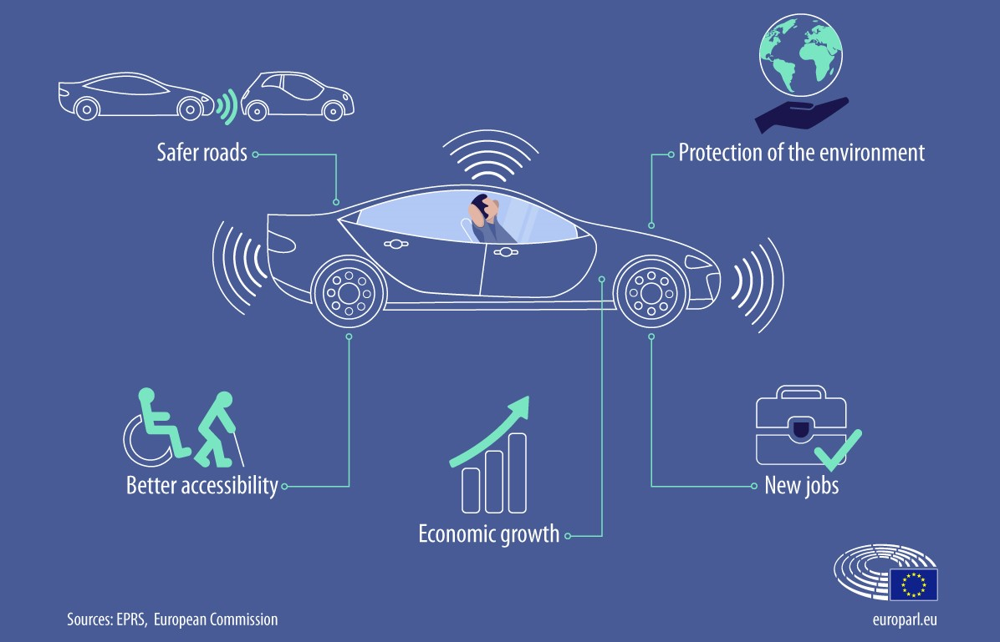
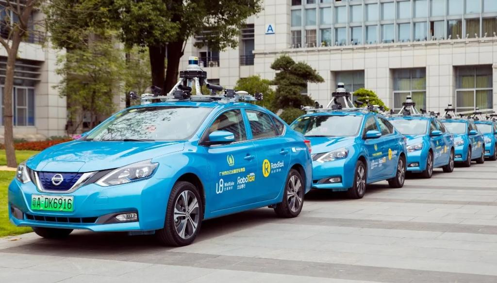

The introduction of autonomous vehicles will have a profound impact on several social and economic spheres. This new technology has the potential to exert influence on many sectors such as public opinion, popular trends, and the economy. As such is the case, it becomes necessary to understand what impacts autonomous vehicles will have in these areas so that all stakeholders that are involved are ready to adapt when they are adopted by the general public.
Autonomous vehicles will have a profound social impact. Driving is a popular means of transportation. However, driving in a traditional sense has several flaws. In a survey asking about the benefits of self-driving cars, 76% of respondents highlighted accident prevention and 66% mentioned an improvement in accessibility for elderly and disabled people [1]. Autonomous vehicles remove the number one cause of all car accidents: the driver. Estimates show that self-driving cars have the potential to reduce accidents by 94% [2]. This significant improvement to safety has become the primary justification behind the introduction of autonomous vehicles. Another problem with the traditional car is its inconvenience for people with limited accessibility. Self-driving cars open a gateway of opportunities for those who are limited by traditional cars. Self-driving cars can have a customer base that is 20% larger than traditional cars due to improvements in accessibility [2]. Autonomous vehicles also pose an increase in overall individual productivity. Driving is one of the most mundane tasks, and commuting has been indicated by several as an inefficient use of time [1]. Self-driving cars will give a significant amount of time back to the user allowing for him or her to be substantially more productive. Workers are more productive when they do not have a frustrating commute [3]. Self-driving cars are also more likely to keep these people safe. As driving becomes progressively redundant, increases in productivity as a result of this new technology are bound to bring positive changes.
Autonomous vehicles can prove to be more environmentally friendly and better for overall public health. Self-driving cars have been explored for their potential as robotaxis which can promote ride-sharing and reduce urban congestion. Utilizing self-driving cars also means that less space will need to be wasted on parking [4]. Reductions in space allocated for parking will alter how urban planners design their cities and allow for more green spaces. Additionally, self-driving vehicles also emanate futuristic vibes in the cities where they are being used. Oftentimes, investors are more likely to invest in companies that are building technologies for the future, spurring economic output.
On the other hand, one negative impact of autonomous vehicles is a labor trade-off. For example, by shifting towards autonomous vehicles, companies such as Uber would have to modify their entire business model. In a survey, 42% of surveyors thought job loss was a serious concern raised by autonomous vehicles [1]. Even though the introduction of autonomous vehicles can potentially lead to economic benefits of 196 billion dollars [7], there will definitely be opposition towards the introduction of self-driving cars from displaced drivers.
Self-driving cars will have a profound impact on the future of work in industries related to automotive vehicles. Currently in the driving realm, jobs involving some sort of prediction are being taken over by Artificial intelligence [5]. Tasks, such as navigation and accident prevention software, are already being handed over to software such as GPS. Advancements such as these have made certain technologies like MapQuest obsolete. On the contrary, they have always made jobs more accessible (e.g. taxi drivers no longer need to memorize urban streets). Additionally, there are concerns regarding how jobs such as taxi drivers and Uber drivers could give way to robotaxis in the future. However, this concern may be slightly premature as there is a huge chasm between the current claims about what robots can technically feasibly do and what they really can do [6].
Autonomous vehicles will also revolutionize how people commute while having many environmental benefits. Self-driving cars will strongly impact many different sectors for better or for worse. Regardless, this technology will need to be designed and implemented with society's best interest at heart to make sure that everyone has a net positive experience.